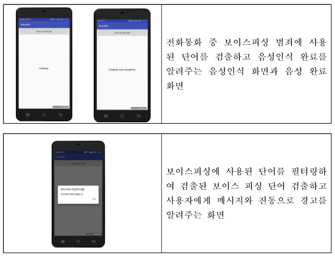

생생보안정보통
생생보안정보통당신은 보이스피싱으로 인한 대출빙자 사기를 피했습니다!
본 예제는 앞서 배운 피싱의 유형중 보이스피싱에 해당한다.
개인의 신용정보를 알아낸 보이스피싱 일당이 저금리로 대환대출이 가능하다고 속이고 기존 대출에 대한 상환자금을 사기이용계좌로 송금하도록 만드는 방식이다.
보이스피싱은 범죄 집단이 불특정 다수에게 전화로 사기 행위를 하여 금전적 피해가 심각하다.
정부 및 관련기관의 예방대책 및 정책에도 불구하고 보이스피싱 피해는 끊임없이 발생하고 있다.
스마트폰 보급이 보편화됨에 따라 애플리케이션을 활용한 다양한 보이스피싱 방지 애플리케이션 개발이 필요하다.
<보이스피싱 방지 애플리케이션 화면 인터페이스>

범죄에 사용되는 전화번호나 문자를 인식하여 차단하는 수동적인 기능이 아니라,
보이스피싱 범죄자가 불특정 다수에게 전화를 걸어 통화중에 사용 되는 음성을 인식하여 범죄를 미리 탐지하고
피해자에게 보이스피싱 범죄 가능성을 알리고 통화를 자동으로 종료하여 보이스피싱을 사전에 예방하는 능동적인 기능을 제공하는 애플리케이션 개발방법이 요구된다.